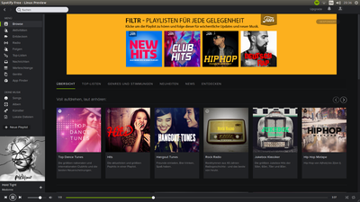

Spotify
Dieser Artikel wurde für die folgenden Ubuntu-Versionen getestet:
Ubuntu 16.04 Xenial Xerus
Ubuntu 14.04 Trusty Tahr
Zum Verständnis dieses Artikels sind folgende Seiten hilfreich:
Spotify ist ein kommerzielles internationales Webportal aus Schweden, das Musik als Stream - und für Premium-Nutzer auch als Download - anbietet. Es stehen über 30 Millionen Lieder zur Verfügung. Das Angebot ist vollkommen legal, da Spotify die Rechte von den Plattenfirmen einkauft bzw. in Deutschland eine Vereinbarung mit der GEMA getroffen hat. Finanziert wird das Angebot über Premium-Nutzer und Werbung, die in der Gratis-Version zwischen den Liedern eingespielt wird. Es ist möglich, die Premium-Version von Spotify kostenlos für 30 Tage zu testen. Da sich das Abonnement jedoch automatisch für einen weiteren Monat verlängert, muss dieses gegebenenfalls vorher rechtzeitig gekündigt werden.
Spotify gibt es auch für Android und iOS, in der kostenfreien Version können jedoch keine einzelnen Songs aus einer Playlist gewählt werden. Maximal 6 Titel pro Stunde können übersprungen werden. Auf einem Tablet stehen die gleichen Funktionen wie auf einem Desktop-Computer zur Verfügung. Zur Nutzung war bis Mai 2012 zwingend ein Facebook-Konto erforderlich. Inzwischen kann auch ein unabhängiges Benutzerkonto erstellt werden.
Installation¶
Der Spotify Client ist nicht in den offiziellen Paketquellen enthalten. Es ist zu beachten, dass das Programm für Linux als Vorschau angeboten und nicht offiziell unterstützt wird.
Hinweis:
Spotify für Linux ist noch immer eine Beta-Version
 . Deswegen können verschiedene Probleme auftreten.
. Deswegen können verschiedene Probleme auftreten.Seit Mitte Mai 2014 liegen 32-bit- und 64-bit-Pakete in unterschiedlichen Versionen vor. Dementsprechend unterscheidet sich der Funktionsumfang.
Fremdpaket¶
Die aktuelle Linux-Version kann man als DEB-Paket mit dem Namen spotify-client 
 herunterladen und manuell installieren [1]. Die Endung "
herunterladen und manuell installieren [1]. Die Endung "amd64" steht für die 64-Bit-, "i386" für die 32-Bit Version.
Hinweis!
Fremdpakete können das System gefährden.
Fremdquelle¶
Siehe hierzu auch Spotify for Linux
Um aus der Fremdquelle zu installieren, muss man unabhängig von der Ubuntu-Version die folgende Paketquelle freischalten:
Hinweis!
Zusätzliche Fremdquellen können das System gefährden.
deb http://repository.spotify.com stable non-free
Zum Hinzufügen der Fremdquelle folgenden Befehl ausführen:
echo deb http://repository.spotify.com stable non-free | sudo tee /etc/apt/sources.list.d/spotify.list
Um die Fremdquelle zu authentifizieren, kann man den Signierungsschlüssel mit folgendem Befehl importieren:
sudo apt-key adv --recv-keys --keyserver keyserver.ubuntu.com 0DF731E45CE24F27EEEB1450EFDC8610341D9410
Nach dem Aktualisieren der Paketquellen
sudo apt-get update
steht das folgende Paket zur Verfügung:
spotify-client
 mit apturl
mit apturl
Paketliste zum Kopieren:
sudo apt-get install spotify-client
sudo aptitude install spotify-client
Achtung!
Ab Version 1.x bietet Spotify keine Unityintegration mehr, d.h. die Menüleiste funktioniert nicht mehr und es gibt auch kein Trayicon mehr. Die ältere Version lässt sich aber weiterhin installieren.
spotify-client-0.9.17
mit apturl
Paketliste zum Kopieren:
sudo apt-get install spotify-client-0.9.17
sudo aptitude install spotify-client-0.9.17
Falls das Programm unter GNOME eingesetzt werden soll, kann man zusätzlich noch das Paket spotify-client-gnome-support installieren.
Verwendung¶

Hat man das Programm gestartet [2], muss man sich zunächst registrieren . Der Spotify-Client für Linux kann mit einem beliebigem Tarif genutzt werden. Spotify integriert sich dabei in das Ubuntu-Sound-Menü (indicator applet) im oberen Panel. Funktionen und aktuelle Preise können in der Tarifübersicht eingesehen werden.
Danach kann man nach Musik im Katalog suchen und sich selbst Playlisten anlegen oder öffentliche Playlisten von anderen abonnieren. Es ist auch möglich, Apps zu nutzen, die verschiedene erweiterte Funktionen rund um die Musik bieten.
Spotcommander¶
Möchte man Spotify von einem anderen Rechner oder Smartphone fernsteuern, bietet sich SpotCommander an. Damit ist sogar das Bearbeiten von Wiedergabelisten möglich. Ein Premiumkonto ist nicht notwendig.
Problembehebung¶
Spotify startet nicht¶
Ab Ubuntu 14.04 fehlt das benötigte Paket libudev0, da es nun in der Version libudev1 vorliegt. Spotify kann die geteilte Bibliothek nicht finden und gibt folgenden Fehler aus:
1 | spotify: error while loading shared libraries: libudev.so.0: cannot open shared object file: No such file or directory
|
Diesen kann man für 64bit-Systeme durch anlegen eines Softlinks beheben. Spotify sollte dann wieder starten. Für 32bit-Systeme müssen die Pfade entsprechend angepasst werden.
sudo ln -s /lib/x86_64-linux-gnu/libudev.so.1 /lib/x86_64-linux-gnu/libudev.so.0
In diesem Fall kann es helfen, den versteckten Ordner ~/.cache/spotify/ im Homeverzeichnis zu löschen. Falls der Programmstart immer noch nicht gelingt, kann man zusätzlich noch den Ordner ~/.config/spotify/ löschen. Dann gehen allerdings alle vorgenommenen Einstellungen verloren.
Es gibt auch die Möglichkeit, dies per Skript bei jedem Programmstart zu automatisieren:
1 2 | #!/bin/bash rm -Rf $HOME/.config/spotify && rm -Rf $HOME/.cache/spotify && spotify |
Quelle: How To Improve Spotify Stability With A Simple Script , 02/2012
Sollte folgende Fehlermeldung ausgegeben werden:
spotify: error while loading shared libraries: libgcrypt.so.11: cannot open shared object file: No such file or directory
kann die libgcrypt.so.11 manuell installiert werden.
Bei Ubuntu 15.04 hilft folgendes:
wget http://security.ubuntu.com/ubuntu/pool/main/libg/libgcrypt11/libgcrypt11_1.5.3-2ubuntu4_amd64.deb sudo dpkg -i libgcrypt11_1.5.3-2ubuntu4_amd64.deb
Computer fährt nicht herunter¶
Spotify muss beendet werden, damit der Computer herunter gefahren werden kann. Dazu reicht es nicht, das Programmfenster zu schließen. Beenden erfolgt entweder über das Menü "File → Exit" oder über das Symbol im Panel:  → "Exit".
→ "Exit".
Entdecken-Seite lädt nicht¶
Eine Möglichkeit ist der Umgebungsvariable "LC_NUMERIC" den Wert en_US.utf8 zuzuweisen (Quelle ). Dazu muss Spotify mit dem folgenden Befehl gestartet werden:
env LC_NUMERIC=en_US.utf8 spotify
Für eine dauerhafte Lösung muss in der Datei /usr/local/share/applications/spotify.desktop die Zeile
Exec=spotify %U
zu
Exec=env LC_NUMERIC=en_US.utf8 spotify %U
geändert werden.
Eine andere Variante ist, den Programmstarter /usr/local/share/applications/spotify.desktop zuerst in den Ordner ~/Schreibtisch/ zu kopieren und erst dann diese Änderung vorzunehmen. Diese Variante hat den Vorteil, dass der geänderte Programmstarter bei einem Update nicht wieder überschrieben wird.
- Erstellt mit Inyoka
-
 2004 – 2017 ubuntuusers.de • Einige Rechte vorbehalten
2004 – 2017 ubuntuusers.de • Einige Rechte vorbehalten
Lizenz • Kontakt • Datenschutz • Impressum • Serverstatus -
Serverhousing gespendet von